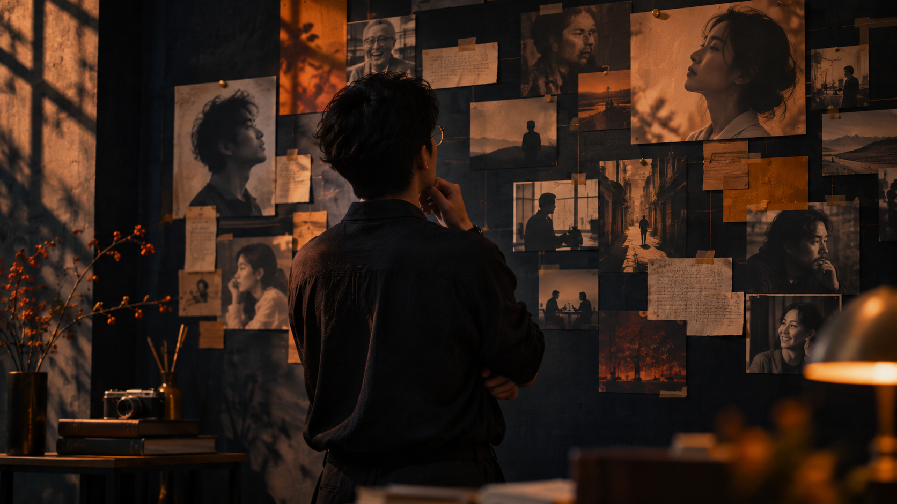
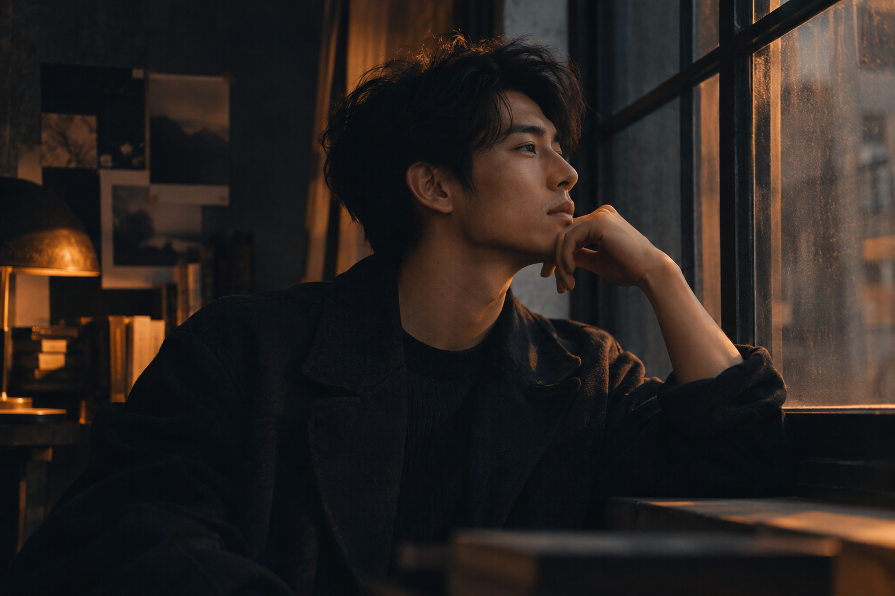
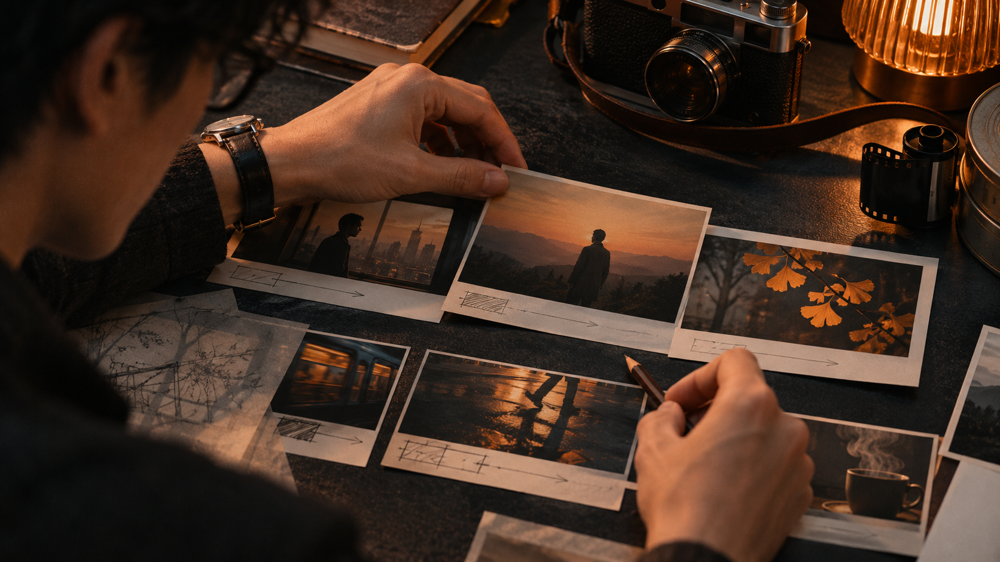
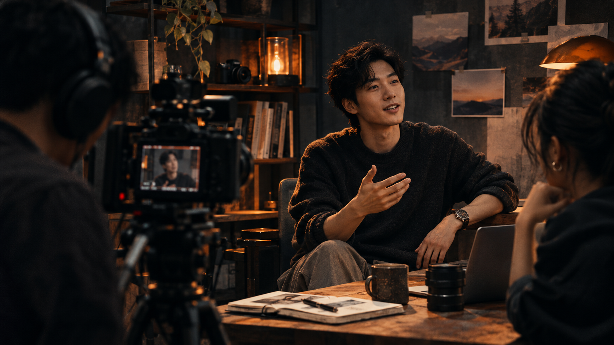
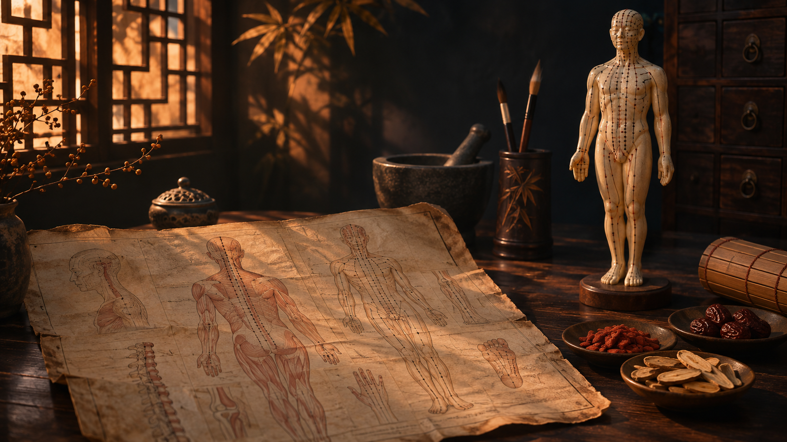

01 / POSITIONING
个人 IP 定位
梳理经历、个人特点与目标，寻找值得被看见的故事和清晰的表达方向。
你好，我是刘少康，一名正在探索和成长的个人 IP 操盘手。相信每个人的经历都有独特的价值，让我们一起找到属于你的表达方式。

我来自河南周口，目前常住浙江义乌。大学学习中医康复治疗，曾在医院康复科实习，后来做过外贸客服，也服务过旅游咨询业务。与不同的人交流，让我越来越相信：真诚的沟通，是建立连接的开始。
我喜欢旅行、探索各地的生活与美食。如今，我希望把对人与故事的兴趣，带进个人 IP 的探索中。
了解我的故事 ↗围绕个人 IP 的成长，从了解一个人开始，一起探索适合的内容与表达方式。

梳理经历、个人特点与目标，寻找值得被看见的故事和清晰的表达方向。

从真实的经验出发，探索选题与内容呈现，让表达更容易被理解和记住。

关注内容反馈与受众需求，在持续实践中调整方向，慢慢建立有温度的连接。

“愿意认识新的人，
去看不同的世界。”
从河南周口到浙江义乌，从外贸客服到旅游咨询，不同的经历让我遇见了许多人，也让我更珍惜耐心倾听和真诚交流。
旅行、美食和各地的生活气息，是我认识世界的方式。重庆的烟火气让我印象深刻，也期待未来解锁更多城市和故事。
大学里，我学习中医康复治疗，也曾在医院康复科实习。
这段学习与实习经历，让我有机会走近中医与康复领域，了解康复工作中对人的关注，也让我更加珍惜耐心、沟通和细致的观察。
从中医康复到个人 IP 探索，方向在变化，我对人与故事的好奇始终没有改变。未来，我也希望继续了解中医文化，用自己的方式记录学习与思考。

如果你也想探索个人 IP，或者有一个想分享的故事，欢迎给我写信。